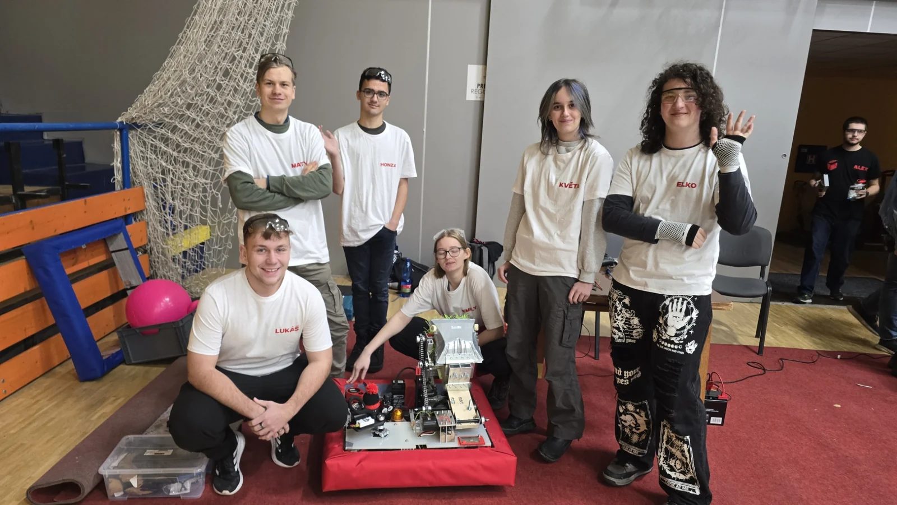
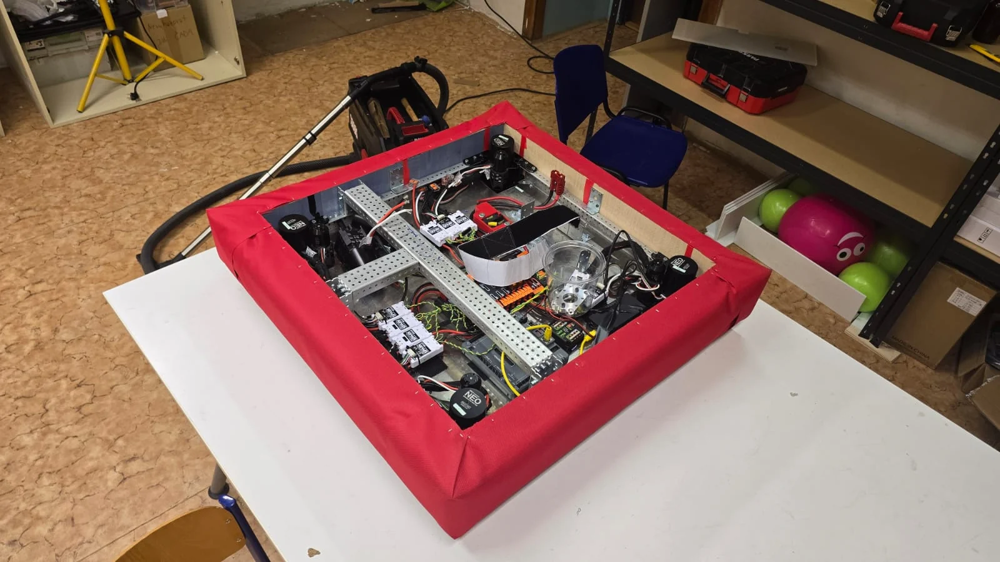
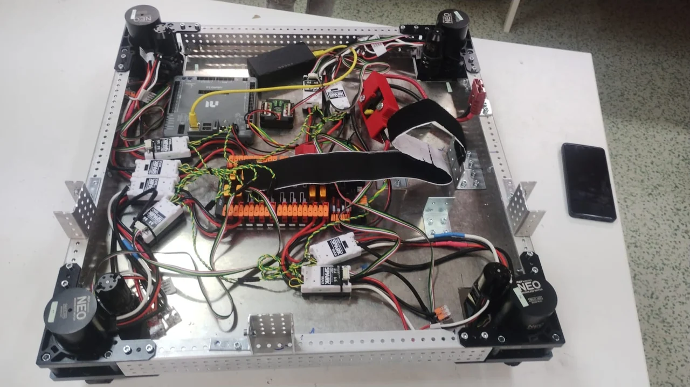
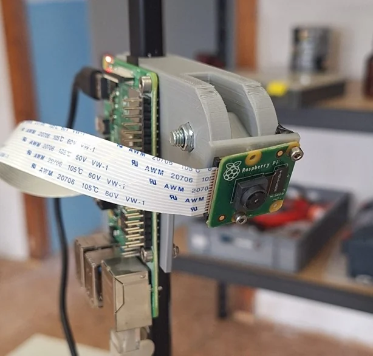
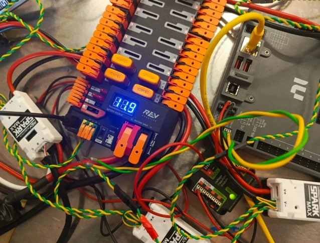
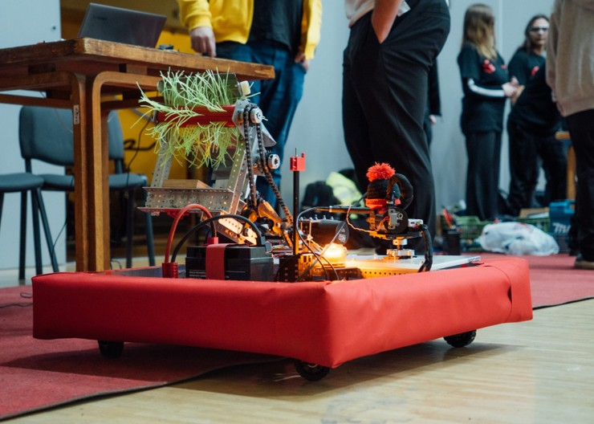
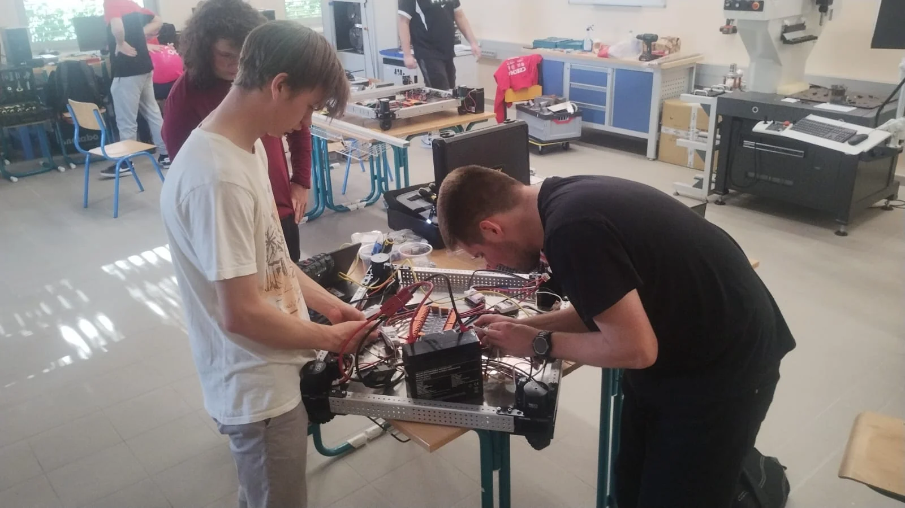
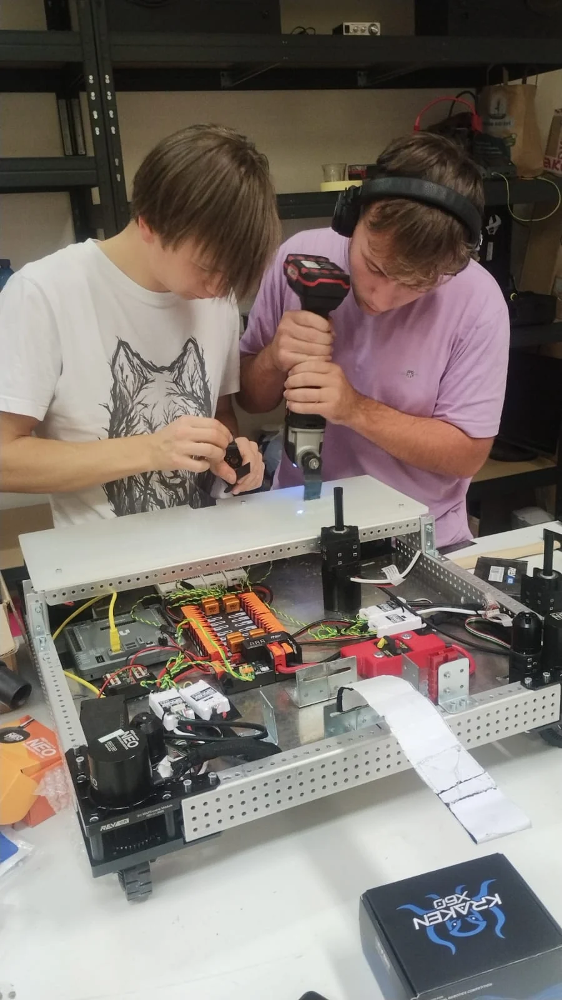

CircuitBreakers / Archiv
Minulé
sezóny
Výsledky, roboti, kód a fotky z předchozích let. Aktuální sezóna je na hlavní stránce, starší najdeš tady.
01 / Sezóna 2025
Sezóna 2025
První ročník Regionální robotické soutěže Ústeckého kraje se konal 27. listopadu 2025 ve Sportcentru SLUNETA v Ústí nad Labem. Skončili jsme druzí se 16 body.
Soutěžili jsme s robotem jménem Drandijela, kterému jsme říkali Drandi. Níže je všechno, co k té sezóně patří: pořadí, robot, veřejný kód a fotky z dílny.

02 / 27. 11. 2025
Regionální robotická soutěž / SLUNETA
Druhé místo
a 16 bodů
Soutěž měla pět disciplín: laser, kroužky, bludiště, pohyblivé předměty a slalom. Robot je plnil manuálně i autonomně a rozhodovala hlavně spolehlivost, přesnost a příprava.
Výsledky a reportáž UJEP ↗TýmBody
CHOBOT26
CIRCUITBREAKERS16
PAPERBOX9
LEDbot4
03 / Robot 2025

Robot / řízení / autonomie
Robot pro sezónu 2025
Loňský robot se jmenoval Drandijela, zkráceně Drandi.
Robota řídíme v Javě s WPILib. Má swerve pohon, kameru pro detekci QR kódů a autonomní režimy. Kód zahrnuje také telemetrii, PID/PIDF regulaci a bezpečnostní logiku.
- Pohon
- Swerve / YAGSL
- Kamera
- kamera + QR / coprocessor
- Autonomie
- bludiště, navigace, reakce na obraz
- Knihovny
- WPILib, PathPlanner, PhotonLib, CTRE, REV
Drandi / robot 2025
Jak robot funguje
Vyber část robota a podívej se na její zapojení.

01 / Pohon
Pohon do všech směrů
Swerve pohon umožňuje natáčet jednotlivé moduly. Robot tak může měnit směr jízdy nezávisle na natočení podvozku. Náš projekt používá knihovnu YAGSL.

02 / Kamera
Kamera a QR kódy
Kamera a koprocesor zpracovávají obraz a detekují QR kódy. Tyto informace používáme při autonomních úlohách a navigaci.

03 / Elektronika
Napájení a řízení
Elektronika propojuje napájení, pohon a senzory. Kód v Javě s WPILib řeší ruční i autonomní režim, telemetrii a bezpečnostní logiku.
Detaily robota / 2025

04 / Kód 2025
Kód v Javě
Ve veřejném repozitáři najdeš kalibraci kamery, autonomní průjezd bludištěm, řízení pohybu i bezpečnostní logiku. Je v něm také vidět, co jsme upravovali před soutěží.
github.com/CircuitBreakersTKM RobUL-2025-Local ↗// veřejný snapshot našeho stacku
robot {
drivetrain: "swerve",
control: ["teleop", "auto"],
vision: "camera + QR",
tuning: "PID / PIDF",
telemetry: true,
season: "2025",
competition_ready: true
}05 / Dílna 2025
Práce v dílně
Montáž podvozku a zapojování elektroniky v naší dílně během sezóny 2025.

